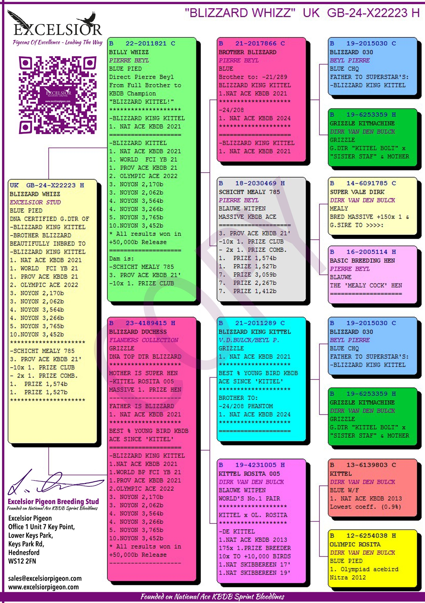
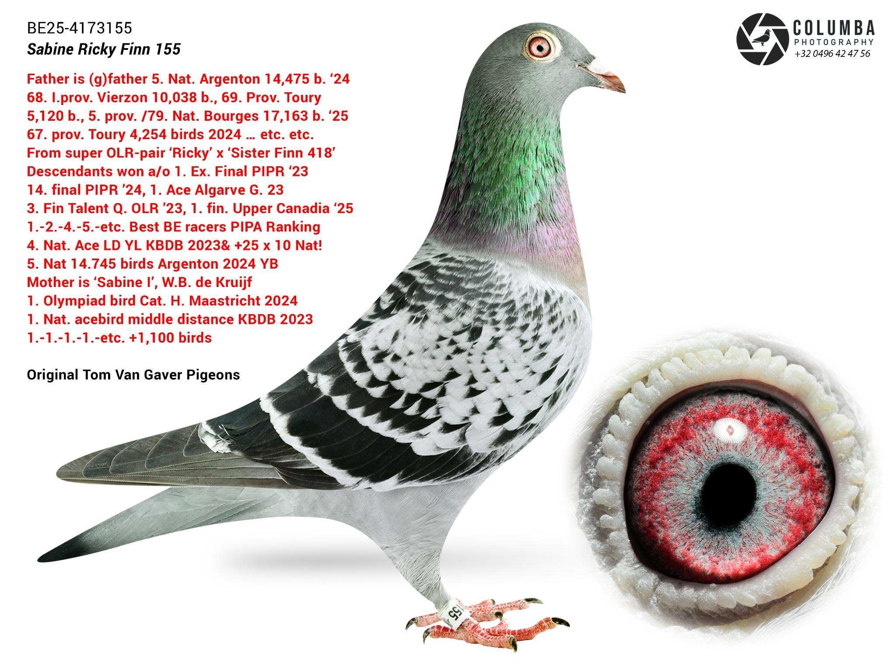
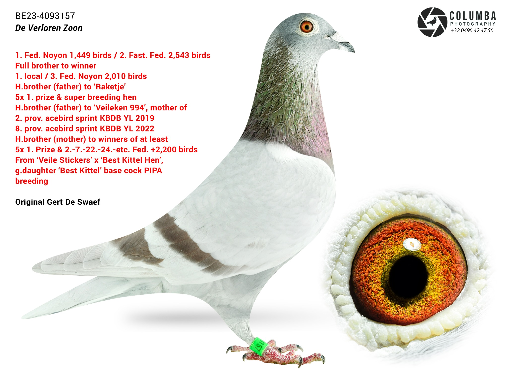
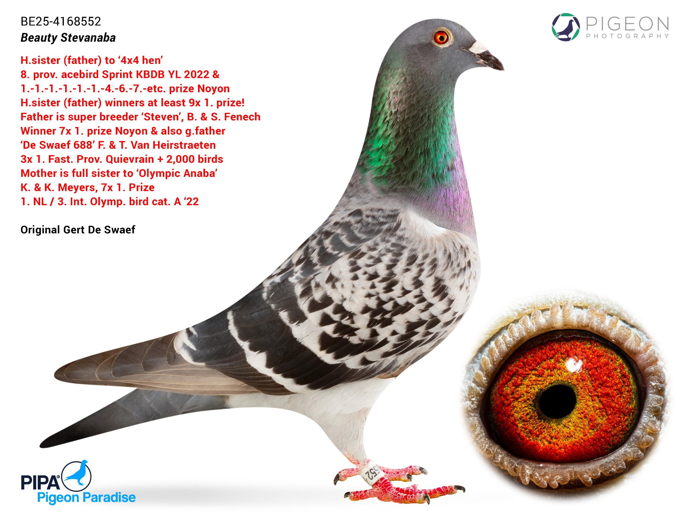
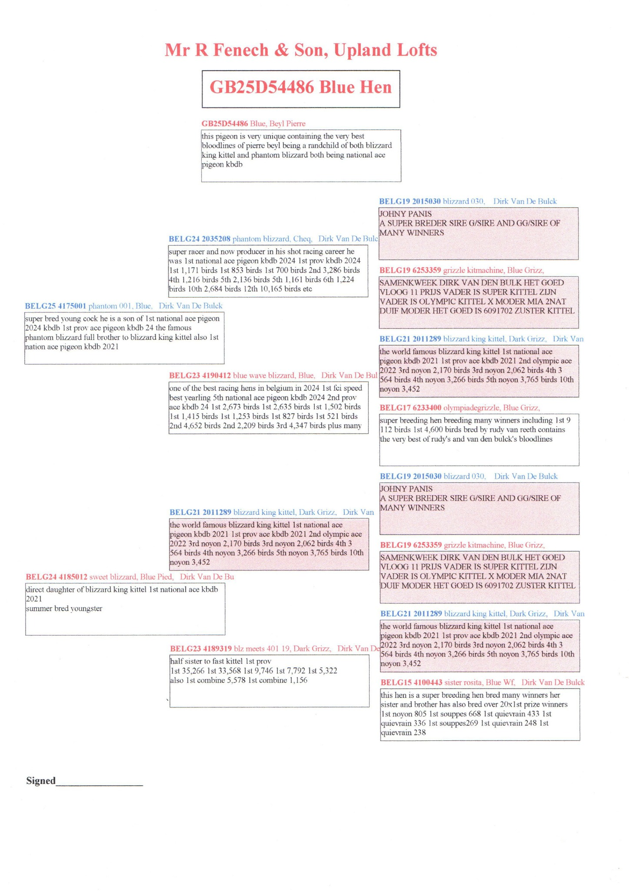
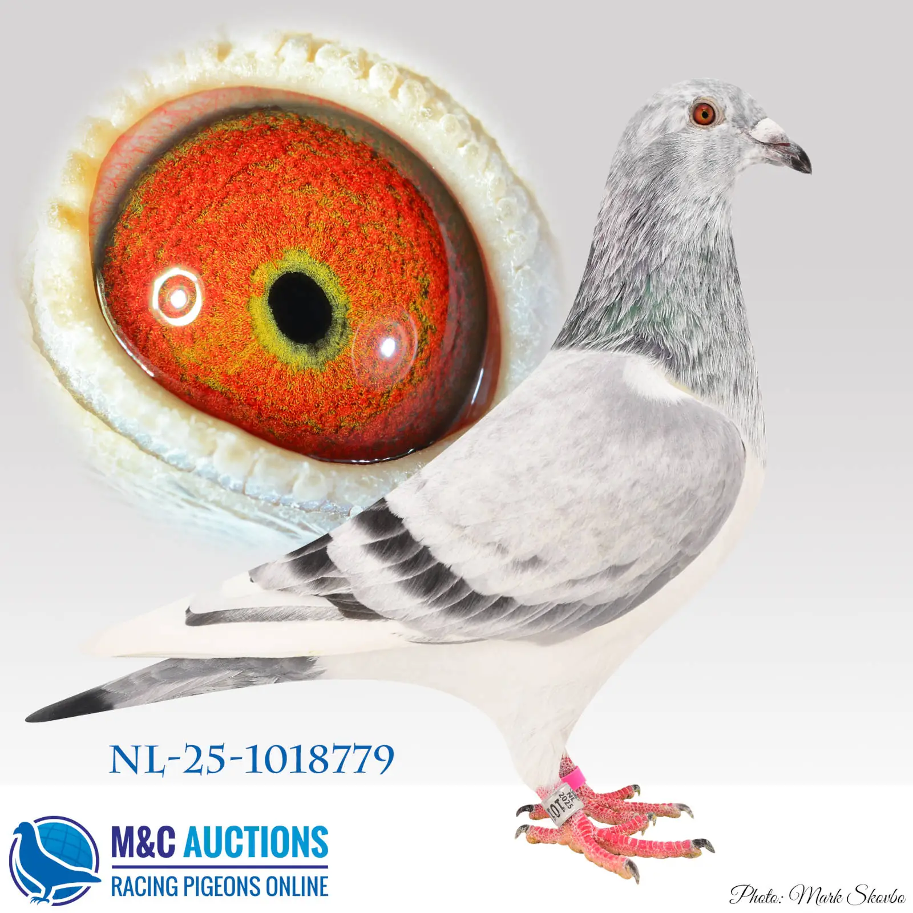

Originele PIPA Breeding
Méchant
BE25-4173711 · Doffer · PIPA Breeding
Méchant is een originele PIPA Breeding doffer uit een uitzonderlijke Best Kittel-opbouw.
Bekijk ficheKweekdatabank
De kweekbasis van RVH Pigeons is opgebouwd rond zorgvuldig geselecteerde nationale en internationale topbloedlijnen. Iedere duif werd gekozen op basis van bewezen genetische kwaliteit, afstamming en toekomstig kweekpotentieel.
BE25-4173711 · Doffer · PIPA Breeding
Méchant is een originele PIPA Breeding doffer uit een uitzonderlijke Best Kittel-opbouw.
Bekijk fiche
GB24-D85660 · Doffer · Excelsior Stud
The One & Only verenigt twee absolute toplijnen: Angel Kittel en Blizzard King Kittel.
Bekijk fiche
NL24-8630062 · Doffer · Ype Hemstra
Golden Angel 062 combineert Blue Best Kittel, Gold Dust, Méchant Best Kittel en Angelina in één pedigree.
Bekijk fiche
GB24-X22223 · Doffer · Excelsior Stud
Blizzard Whizz is sterk ingeteeld op Blizzard King Kittel en daardoor bijzonder interessant als kweekduiver.
Bekijk fiche
GB25-X14340 · Duivin · Excelsior Stud
Dancing Dream is een rechtstreeks aangekochte kweekduivin uit Excelsior Stud.
Bekijk fiche
BE25-4173155 · Duivin · Tom Van Gaver
Sabine Ricky Finn 155 brengt moderne Tom Van Gaver-kwaliteit naar de RVH Pigeons-kweekbasis.
Bekijk fiche
BE23-4093157 · Doffer · Gert De Swaef
De Verloren Zoon is afkomstig van het topkweekhok van Gert De Swaef en verenigt Stickers-Donckers met Best Kittel-invloed.
Bekijk fiche
BE25-4168552 · Duivin · Gert De Swaef
Beauty Stevanaba combineert Gert De Swaef-kwaliteit met sterke Steven- en Olympic Anaba-invloeden.
Bekijk fiche
NL21-1509878 · Duif · Gebr. Leideman
Een rechtstreekse Leideman-duif die de sterke Nederlandse prestatielijnen naar RVH Pigeons brengt.
Bekijk fiche
GB25-D54486 · Doffer · Mr. R. Fenech & Son
Een rechtstreekse doffer uit de hokken van Mr. R. Fenech & Son, opgebouwd rond de Blizzard- en Kittel-familie.
Bekijk fiche
BE25-4034025 · Doffer · Eddy Den Haese – Molenzicht
Baloe is een jonge kweekduiver afkomstig van Eddy Den Haese en opgebouwd rond moderne Leideman- en Eijerkamp-lijnen.
Bekijk fiche
NL25-1018779 · Doffer · Hendrik Wilpers
Int. Blizzard King is een jonge kweekduiver van Hendrik Wilpers, opgebouwd rond de wereldberoemde Blizzard King Kittel-familie.
Bekijk fiche